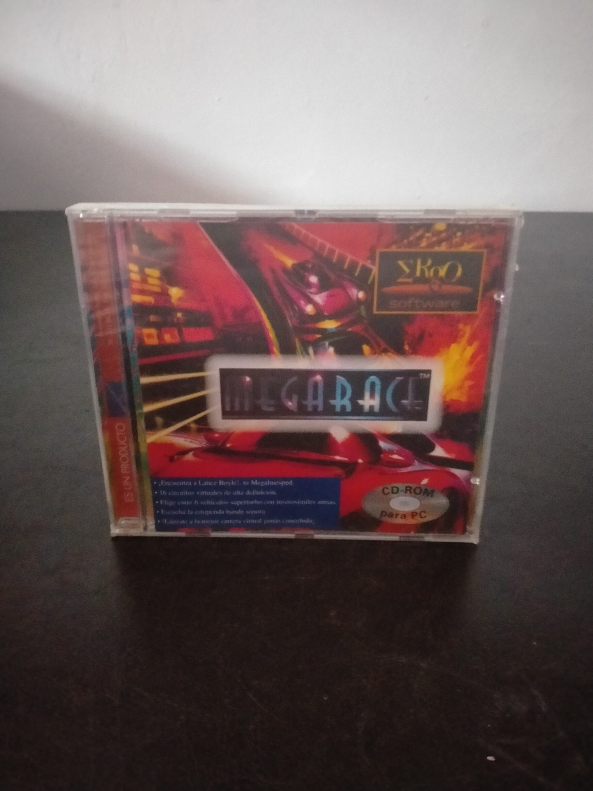

Ficha #000000
MegaRace
MegaRace es un juego de carreras futuristas y combate vehicular desarrollado por Cryo Interactive y publicado originalmente en 1993 para PC CD-ROM. La competición se presenta como un violento programa de televisión conducido por el excéntrico Lance Boyle, personaje interpretado mediante secuencias de vídeo digitalizado. El jugador participa en circuitos prerenderizados enfrentándose a vehículos rivales mediante conducción arcade, colisiones y armamento. Su combinación de vídeo de movimiento completo, escenarios generados por ordenador, música electrónica y presentación televisiva convirtió al título en una producción representativa de la primera etapa multimedia del CD-ROM. Esta edición española en caja jewel case fue comercializada por Siro Software y conserva interés documental como reedición económica localizada para el mercado de compatibles PC.
- Formato
- Jewel Case
- Plataforma
- MsDos
- Género
- Carreras Combate vehicular Arcade Acción FMV
- Serie
- Todos Jewel Case
- Desarrollador
- Cryo Interactive
- Distribuidor
- Mindscape, Siro Software
- EAN
- —
Contenido de la edición
- Caja jewel case
- CD-ROM
Preservación
- Protección
- No determinado
- Formato recomendado
- BIN/CUE
- Jugable en virtualización
- Sí
Se recomienda crear una imagen BIN/CUE del CD-ROM para conservar posibles pistas de audio y la estructura completa del soporte. La ejecución virtual es viable mediante DOSBox o un entorno MS-DOS equivalente con la imagen montada como unidad de CD-ROM.